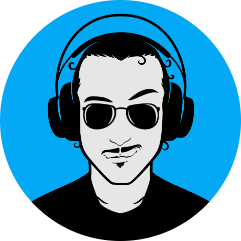

Twitch · YouTube · Kick · Türkçe Oynanış
KAPTAN QEDY
GERİ DÖNÜYOR
Uzun bir sessizlikten sonra güverteye dönüyoruz. Pazartesi'den Cuma'ya her akşam 20:30'da yeni bir tema, aynı gemi, aynı mürettebat.
Kaydır▾

Mürettebat Dosyası
Perdenin arkasında biri var
Ertuğrul — sahnede Kaptan Qedy. Kocaeli Üniversitesi'nde okuyor; resim çiziyor, müzik yapıyor, kod yazıyor, şiir yazıyor, fotoğraf çekiyor. Ekranın öbür tarafında bunların hepsi bir arada — yayın da bu karışımın bir parçası, sadece oyun oynamak değil.
Öğrenci
Ressam
Müzisyen
Yazılımcı
Şair
Fotoğrafçı
Haftalık Sefer
Her gün ayrı bir rota
Pazartesi'den Cuma'ya her akşam 20:30. Cumartesi dinleniyoruz, Pazar sadece YouTube.
Pazartesi
Serbest
O günkü keyfe göre — ne çekerse
Salı
Hikayeli
Baldur's Gate 3 ile uzun soluklu macera
Çarşamba
Competitive
Rekabet modu açık
Perşembe
Survival
Hayatta kalma modu
Cuma
Toplu Ekip
Ekip ruhu, gece geç saatlere kadar
Cumartesi
Dinlenme
Kaptan da dinlenir
Pazar
YouTube
Haftanın en iyileri
İki Liman
Nerede rahatsan orada
Aynı yayın, iki güverte. Nerede izlersen izle, mürettebat aynı.
Sinyal Gönder